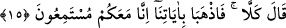

15. Allah buyurdu: “Hayır (seni asla öldüremezler)! İkiniz mucizelerimizle gidin.
Şüphesiz ki, biz sizinle beraberiz, (her şeyi) işitmekteyiz.
“Allah buyurdu: “Hayır (seni asla öldüremezler)!” Sen zanlarını bir tarafa bırak.
Onlar seni o sebeple öldüremezler. Çünkü ben onları sana değil, seni onlara musallat
ediyorum. “İkiniz” yâni sen ve taleb ettiğin kardeşin Hârun “mucizelerimizle” Allah’ın
kudretine, peygamberliğin huccetine delâlet eden dokuz âyetimiz/mûcizemizle “gidin.”
Burada hitab, hazırda olan Mûsâ (a.s.)’ın şahsında her ikisinedir. Bu ifâde, Mûsâ
(a.s.)’ın korkusunu gidermeye remizdir.
“Şüphesiz ki, biz sizinle beraberiz,” Bu ifâde, korkuyu niçin terk etmesi gerektiğinin
sebebini ortaya koymakta; kemâliyle korumayı ve yardımı temin ederek onları
ziyâdesiyle teselli etmektedir.
“Sizinle” ifâdesiyle kastedilen Mûsâ (a.s.), Hârun (a.s.) ve Fir’avn’dur. Cenâb-ı Hak
Mûsâ ve Hârun (a.s.) ile yardım ve desteğiyle, Fir’avn ile de kahr ve hezimetiyle
beraberdir.
“(her şeyi) işitmekteyiz.” Dinlemenin hakîkati kulak vererek işitmeyi taleb etmek
demektir. Allah Teâlâ bundan münezzehtir. Bu yüzden bu ifâde, mutlak olarak kulak
verme olmaksızın harfleri ve sesleri idrâk etmek demek olan ‘işitme’ mânâsına istiâre
olarak kullanılmıştır. Mânâ şöyledir: Sizinle onun arasında olacakları işitmekteyiz.
Dolayısıyla sizi ona galip ve üstün kılacağız.
Allah Teâlâ kendi durumunu elinde kuvvet ve yetkisi bulunan kimseye benzetmiştir. O
kimse bir topluluğun mücâdelesinde/tartışmasında hazır bulunur. Onlardan dostlarına
yardım etmek ve düşmanlara onları gâlip kılmak için aralarında cereyan edenleri dinler.
Burada yardım vaadi konusunda mubâlağa vardır. Bu sözde istiâre-i temsîliyye vardır.
Çünkü vech-i şebeh birden fazla ve muhtelif şekillerden oluşmaktadır.